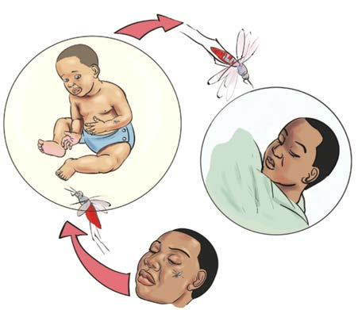

Baadhi ya magonjwa yanayoambukiza ni kama yafuatayo:
Malaria
Malaria ni ugonjwa unaosababishwa na vimelea viitwavyo plasmodium. Ugonjwa huu huenezwa na mbu jike anayeitwa anofelesi. Mbu huyo huambukiza malaria kwa kuingiza vimelea vya ugonjwa mwilini anapomuuma mtu. Kielelezo namba 1 kinaonesha/kinabainisha uenezwaji wa ugonjwa wa malaria.
Mtoto akiambukizwa malaria
Mtu mzima akiambukizwa malaria

Mtu mwenye maambukizi ya malaria
Kielelezo namba 1 kinaonesha/kinabainisha uenezwaji wa ugonjwa wa malaria.
Dalili za malaria
Miongoni mwa dalili za ugonjwa wa malaria ni kama vile:
(a) Homa kali inayoambatana na kupanda kwa joto mwilini;
(b) Kuhisi baridi na kutetemeka mwili;
(c) Kuumwa kichwa;